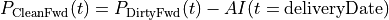
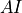
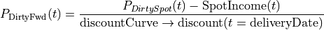
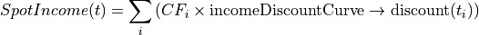
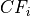

quantlib.instruments.bondforward.BondForward¶
- class BondForward(Date value_date, Date maturity_date, Position position_type, Real strike, Natural settlement_days, DayCounter day_counter, Calendar calendar, BusinessDayConvention convention, Bond bond, HandleYieldTermStructure discount_curve, HandleYieldTermStructure income_discount_curve)¶
Bases:
ForwardForward contract on a bond
- value_date
refers to the settlement date of the bond forward contract.
- maturity_date
- this is the delivery (or repurchase date) for the underlying bond
(not the bond’s maturity date).
Notes
Relevant formulas used in the calculations (
 refers to a price): pomme
refers to a price): pommeClearn forward price:

where  refers to the accrued interest on the underlying bond.
Dirty forward price:

Spot income:

where  represents the ith bond cash flow (coupon payment) associated with the underlying bond falling between the settlementDate and the deliveryDate.
(Note the two different discount curves used in 1. and 2.)
- __init__(*args, **kwargs)¶
Methods
__init__(*args, **kwargs)implied_yield(self, ...)implied yield
set_pricing_engine(self, PricingEngine engine)Sets the pricing engine.
spot_income(self, ...)NPV of income/dividends/storate-cossts etc.
Attributes
(dirty) forward bond price minus accrued on bond at delivery
(dirty) forward bond price
forward_valueforward value/price of underlying, discounting income/dividends
is_expirednet_present_valueInstrument net present value.
npvShortcut to the net_present_value property.
spot_valuespot value/price of an underlying financial instrument
valuation_date- clean_forward_price¶
(dirty) forward bond price minus accrued on bond at delivery
- forward_price¶
(dirty) forward bond price